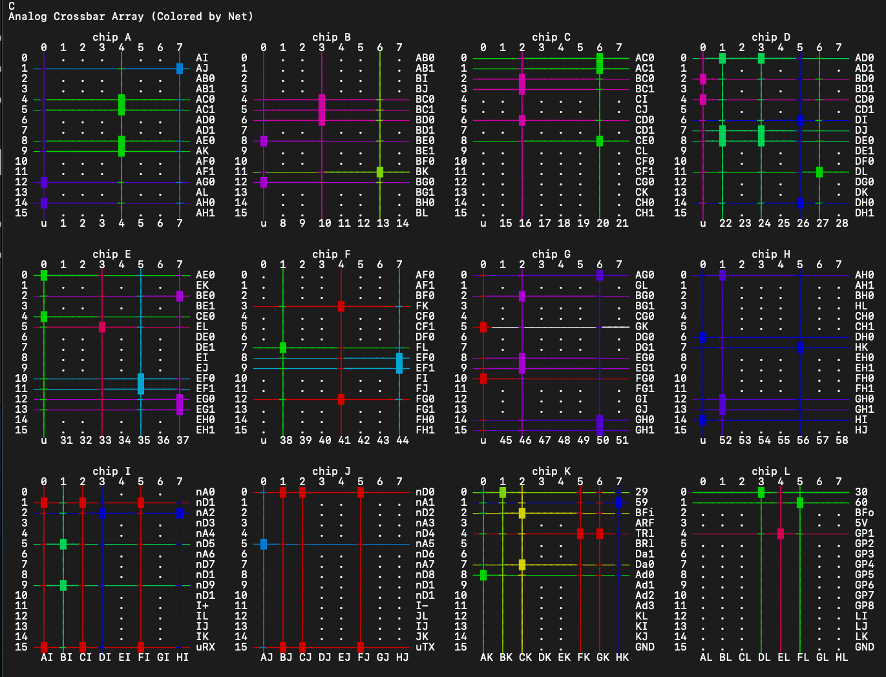

Debug Views
Look Inside your Jumperless
Crossbar Array
There's a new way to see what the 12 analog crossbar switches are up to, just enter C in the menu

Lowercase c will show a compact version

You can also set it to live updating mode with c!
Bridge Array
Enter b in the menu. This is generally the most helpful one for me to troubleshoot what's going on if your issue has anything to do with routing or connections. It probably looks like nonsense to you but I've been in it so long it makes perfect sense to me.
Net List
Enter n in the menu to show this one. If you have anything that's doing any measurement (gpio input or ADCs), it'll stay up and live update if any of them change. (And just like basically any menu not asking for input, entering anything will bring you back to the main menu.)